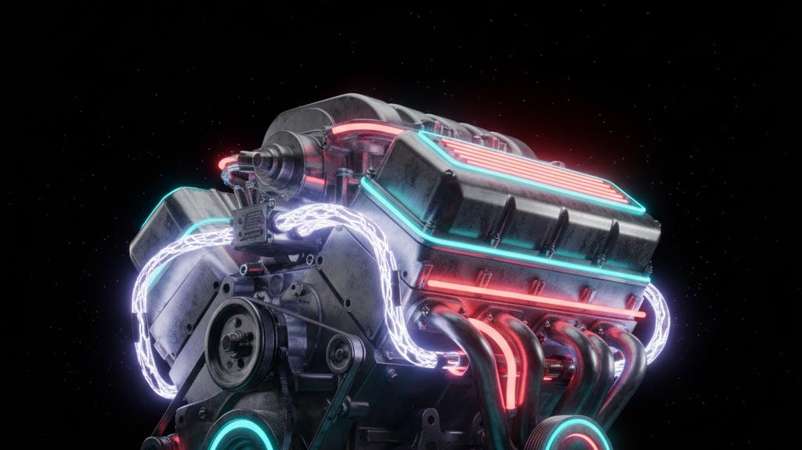

The Decade of Restoration: 2025–2035
Building on "The Year America Breathed Again"
The Cascade Nobody Predicted
Ten years after the conversion began, America looked different in ways both dramatic and subtle. The sky was clearer, yes—but the transformation ran deeper than air quality metrics. It was written in the surfaces of buildings, the longevity of engines, and the quiet reshaping of an entire industry.
The Engine Renaissance
The most surprising development was the lifespan explosion.
Engines converted to CNG—especially those that received full compression optimization—weren't just running cleaner. They were running indefinitely. The absence of carbon fouling, the elimination of fuel dilution in crankcase oil, and the near-complete disappearance of combustion deposits created what mechanics began calling "the perpetual powertrain."
Oil changes dropped from every 3,000–5,000 miles to 15,000–25,000 miles. Engine oil stayed golden amber instead of turning black within weeks. Fuel injectors, once regular maintenance items requiring periodic cleaning or replacement, became lifetime components. Spark plugs that used to foul and misfire now lasted 100,000+ miles.
Cars from the 1990s and early 2000s—previously considered "end-of-life" candidates—suddenly became viable again with subsidized engine rebuilds. A 2008 Honda Civic or 2005 Ford F-150, given a refreshed block and CNG conversion, could realistically run another 300,000 miles. The used car market exploded.
The Shrinking of New Car Lots
By year seven, something strange happened to auto dealerships: their inventories shrank by half.
Not because of supply chain problems—but because demand had fundamentally changed. Why buy a $45,000 new vehicle when a $12,000 used car with a $3,000 rebuild and $2,000 CNG conversion could deliver another decade of reliable service?
The "new car smell" lost its appeal when set against clean-burning engines that never gummed up, never left carbon trails, and cost $1.50 per gallon-equivalent to refuel at home.
Dealerships pivoted. The massive glass showrooms became service bays. The profit model shifted from high-margin new sales to high-volume conversions, rebuilds, and CNG system installations. Used car lots grew. Mechanics became the new heroes.
The Cleaning of America
But perhaps the most visceral change—one that took years to notice but became undeniable—was the physical cleaning of the built environment.
The End of Grime
In cities, the exteriors of buildings no longer accumulated that oily black film. The particulate matter that once coated windowsills, ledges, and freeway overpasses—that greasy, petroleum-derived soot—vanished.
Yes, coal power plants still ran. Industrial zones still emitted. But the ambient urban griminess—the stuff you wiped off your hands after touching a railing, the residue on parked cars, the darkening of white paint near highways—was 90% gone.
Maintenance crews noticed it first. Pressure-washing schedules for public infrastructure were cut in half. Buildings stayed cleaner, longer. In Los Angeles, the famous Hollywood sign required repainting every few years; after the CNG transition, the intervals stretched to a decade.
Oil Spots Without the Black
Even the aesthetic of leaked fluids changed. Engine oil that did drip onto garage floors or parking lots—now changed so infrequently and staying so clean—left faint amber stains instead of the tarry black residue of carbon-saturated conventional oil.
It was a small thing. But it mattered. America began to look maintained again, not by mandate but by the simple physics of cleaner combustion.
The Progressive Decarbonization Curve
The CO₂ reductions weren't dramatic in year one. The initial 25% cut from gasoline-to-CNG substitution was immediate, but the real gains came from the cascade:
Year 1–3: The Substitution Phase
- 25% transportation CO₂ reduction (well-to-wheel vs. gasoline)
- Immediate particulate elimination in urban cores
- Methane leakage stabilized at ~1.2% (down from 1.4%) due to new EPA leak detection mandates
Year 4–7: The Efficiency Phase
- Owners began returning for full engine re-compression and optimization
- "Second wave" conversions added another 5–8% efficiency gain
- Total fleet efficiency improved as older, less-optimized conversions cycled out
- Cumulative CO₂ reduction: ~32% vs. original gasoline baseline
Year 8–10: The Longevity Dividend
- Reduced vehicle manufacturing demand = avoided embodied carbon
- A 2015 vehicle lasting until 2035 (instead of being replaced in 2025) saves ~10–15 tons of manufacturing CO₂
- Fleet turnover slowed by 40%, compounding lifecycle emissions benefits
- Cumulative reduction: ~38% vs. original baseline, with manufacturing offsets pushing effective savings even higher
The Unintended Beneficiaries
Small Towns Found Their Niche
Rural mechanics who'd struggled against dealer service dominance became conversion specialists. Towns with populations under 10,000 suddenly had waiting lists. Former coal country found a new identity: CNG retrofit hubs.
The Return of the Corner Garage
Chain quick-lube operations hemorrhaged revenue as oil change intervals quintupled. But independent garages—the ones that could install compressors, tune CNG systems, and rebuild engines—thrived. Craftsmanship mattered again.
Real Estate Shifts
Homes with garages or carports saw property value bumps—not huge, but consistent. The ability to refuel at home became a quiet amenity, like central air. Urban apartments without parking began installing shared CNG compressor stations in common areas, turning a liability into a selling point.
The Health Transformation
The Disappearance of the Inhaler Generation
By year five of the CNG transition, pediatricians noticed something remarkable: new asthma diagnoses had dropped by 40% in converted urban areas.
Children born after 2027—the "clear-air generation"—showed dramatically lower rates of respiratory sensitization. The wheezing, the midnight ER visits, the school absences that had become normalized as "urban childhood" became increasingly rare.
Nearly one-third of global asthma cases are associated with PM2.5 exposure, and research shows that for every 10 μg/m³ increment in PM2.5, childhood asthma risk increases by 21.4%. The CNG transition delivered reductions far larger than that in urban cores.
Emergency inhaler prescriptions for children under 12 fell so precipitously that pharmaceutical companies began quietly closing production lines.
Parents who'd grown up budgeting for rescue inhalers, controller medications, and nebulizer treatments watched their own children run freely—no pre-game puff, no weather-watching anxiety, no careful monitoring of the Air Quality Index before outdoor activities.
The economic cascade was profound: fewer missed work days for parents, reduced healthcare utilization, declining demand for specialist appointments. Studies estimated that a nationwide 1 μg/m³ reduction in PM2.5 would generate nearly $350 million annually in economic benefits from reduced asthma symptoms alone.
Will There Still Be a Need for Attainment Zones?
Yes, but radically transformed.
The New Attainment Reality
With transportation emissions—historically the dominant source of urban PM2.5 and NOx—effectively eliminated, attainment zones shifted focus:
Industrial Sources Remain: Factories, refineries (the remaining ones), construction dust, and commercial operations still emit particulates. But these are stationary, regulated sources that are far easier to control than millions of mobile combustion engines.
Natural Sources Persist: Wildfires, dust storms, pollen, and sea salt aerosols continue. But the anthropogenic baseline drops so dramatically that even during natural events, air quality rarely breaches dangerous thresholds.
Attainment Zones Become Success Stories: Cities like Los Angeles and Houston—once poster children for chronic non-attainment—moved into permanent compliance. The regulatory apparatus didn't disappear, but it shifted from crisis management to fine-tuning and maintenance.
Specialized Vapor Recovery Systems Obsolete: Those cumbersome gas pump nozzles with vapor recovery boots? Unnecessary. With CNG home refueling, the entire infrastructure of retail gasoline dispensing—and its fugitive emissions—became a relic.
The irony: Americans tolerated the inconvenience of vapor recovery handles because they accepted smog as inevitable. The CNG transition delivered on the promise those regulations could never fulfill: "No Smog, Just Like That."
Will We Still Need Gasoline Refineries?
Dramatically fewer. And specialized blends? Gone entirely.
The Refinery Collapse (In a Good Way)
Current U.S. refining capacity: ~18 million barrels per day
Post-CNG transportation demand: ~4-5 million barrels per day
Why any at all?
- Aviation Fuel: Jet fuel (kerosene) still required for commercial aviation—though even here, Sustainable Aviation Fuel (SAF) begins taking share
- Heavy Industry: Petrochemical feedstocks for plastics, lubricants, and industrial processes
- Marine Diesel: Large ships and commercial vessels (though LNG marine fuel grows rapidly)
- Agricultural Equipment: Tractors, combines, heavy machinery (prime candidates for future CNG conversion)
- Legacy Fleet: The last holdouts—classic cars, specialty vehicles, remote operations
The End of Boutique Gasoline
Regional gasoline blends—summer blends, winter blends, California reformulated gasoline, oxygenated fuel programs—all gone.
These regulations existed because millions of tailpipes were emitting precursors to ground-level ozone. With CNG vehicles producing virtually zero volatile organic compounds (VOCs) and dramatically reduced NOx, the entire regulatory justification for specialized blends evaporated.
What remained was a simplified, minimal refining sector producing:
- Jet fuel
- Diesel for marine and industrial use
- Petrochemical feedstocks
- Small-batch gasoline for the shrinking legacy fleet
Refinery economics transformed completely: Many refineries closed or converted to biofuel production. The remaining ones operated at high utilization on stable, predictable demand—no more seasonal blend switches, no more regional variation, no more volatility.
The Houston Ship Channel, once dominated by refining, pivoted to LNG export terminals and petrochemical production. The air cleared there, too.
The World That Emerged
By 2035, the CNG transition wasn't just a policy success—it was a cultural reset.
The idea that you had to "go somewhere" to refuel felt quaint, like rotary phones. The concept of a "gas station" became something you explained to children. The fear of energy embargoes—the kind that had paralyzed the nation in 1973—felt like ancient history.
America hadn't just transitioned its fuel source. It had rebuilt its relationship with machines, maintenance, and self-reliance.
And on a clear morning in Los Angeles, Houston, or Denver—when the sunlight hit the skyline without a filter of smog—you could see it. Not just cleaner air, but the restored confidence of a nation that remembered how to build things that worked.
The Full Picture: A Nation That Solved What It Could Control
The CNG transition didn't just cut emissions or save money.
It eliminated the health crisis that urban air pollution represented—particularly for children, who were the most vulnerable.
It simplified regulatory complexity by removing the largest, most diffuse source of pollution from the equation.
It transformed entire industries—not through mandates and subsidies chasing foreign supply chains, but by leveraging domestic resources and existing expertise.
And it proved that when you solve problems you control—domestic engineering challenges with domestic solutions—the benefits cascade in ways policy models never predict.
The inhalers get put away. The smog disappears. The refineries downsize. The attainment zones become success stories instead of perpetual struggles.
And America breathes—really breathes—for the first time in generations.
"The future isn't what we dream. It's what we maintain."
— Adapted from Stewart Brand